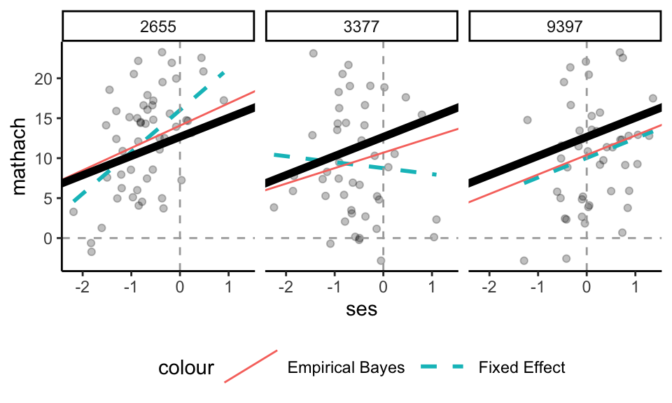

Each row corresponds to a different school, and gives our estimated intercept and slope for that school. These estimates are shrunken towards the overall population. To illustrate, consider these three schools:

The dotted lines are if we just ran a regression for the data in that school. The thick black line is the overall population average line (averaged across all schools, from our MLM). The red line is the Empirical Bayes line–we are shrinking the dotted lines toward the thick black line, and we shrink depending on the amount of data, and how informative the data is, in each school. For example, school 3377 has a lot of shrinkage of slope, and a bit of intercept. School 9397 is basically unchanged. We see the slopes are getting shrunk much more than the intercepts–this is because we are less certain about the slopes; we shrink more for things we are uncertain about.
Remember our Radon and counties example: we shrunk small counties MORE than large counties, when estimating intercepts. We are now estimating the pair of intercept and slope, and how well we estimate the slope depends on amount of data, but also the spread of the data on the x-axis and a few other things. But the intuition is the same: everything is pulled towards the grand average line.
18.1 Comparing the model to the estimates
We can measure how much variation there is in the Empirical Bayes estimated intercepts and slopes, along with the correlation of these effects:
We display these estimates alongside the model estimates:
parameter
model estimate
Emp Bayes estimate
stdev intercept
2.20
2.01
stdev slope
0.64
0.28
correlation
-0.11
-0.23
If we compare the variation in the empirical Bayes estimates to the model estimates, we see that the standard deviations are smaller and the correlation is estimated as larger in magnitude. Importantly, our model does a good job, in general, estimating how much variation in random intercepts and slopes there is; it is the empirical estimates that are over shrunk. Trust the model, not the spread of the empirical estimates.
In short, the empirical estimates are good for predicting individual values, but the distribution of the empirical estimates is generally too tidy and narrow, as compared to the truth. The model is what best estimates the population characteristics. That being said, the empirical Bayes estimates are far better than the raw estimates (in the above, for example, trust the red lines more than the dashed lines).
The raw estimates are over dispersed; the measurement error is giving a bad picture.
18.3 Simulation to get a just-right picture
As discussed in class, empirical Bayes is too smooth. Raw is too disperse. If we want to see a picture of what the population of schools might look like, we can make a plot of 160 NEW schools generated from our model (to see how our partially pooled (Empirical Bayes) estimates are OVER SHRUNK/OVER SMOOTHED).
We simulate from our model; we are not using the empirical bayes estimates at all. See the slides and script for Packet 2.4 for how to do this simulation.